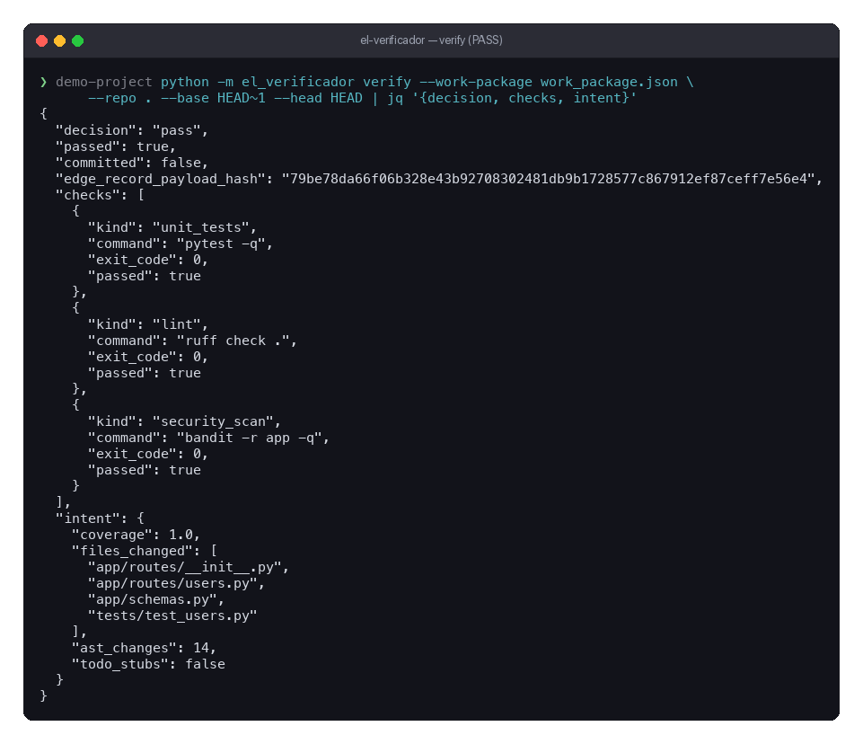

Never trust the self-report.
Unit tests, linters and security checks run inside the sandbox, under a time limit and memory, CPU and PID caps. The agent's own status is never the evidence.
Independent verification before the merge
El Verificador independently audits Taskrivet's work before the Docker sandbox is torn down and code is merged. It closes the loop in the Panther → Ticket Board → Taskrivet → El Verificador → EdgeRecord pipeline.

01 / Quick start
Run it dry first: --dry-run writes nothing and executes nothing. An acceptance command never runs on your machine, in any mode.
# install pip install el-verificador # verify a distilled work package against a repository el-verificador verify \ --work-package work-package.json \ --repo . \ --dry-run # read the record el-verificador audit --receipts el-verificador audit --verify-chain # how the gate is behaving el-verificador metrics
02 / Core responsibilities
Unit tests, linters and security checks run inside the sandbox, under a time limit and memory, CPU and PID caps. The agent's own status is never the evidence.
The distilled intent becomes obligations: individually checkable claims, each with a status and the evidence behind it. Did it build the route, or write a TODO and call it done?
Failures become a correction prompt that names the violated obligations. Three attempts, a wall-clock budget, and a no-progress guard that stops a retry that changed nothing. Then the ticket is flagged.
Every verdict becomes an EdgeRecord receipt: an append-only file, fingerprinted with EdgeRecord's own canonical rule, chained to the previous one, and pointing at the evidence it was made from.